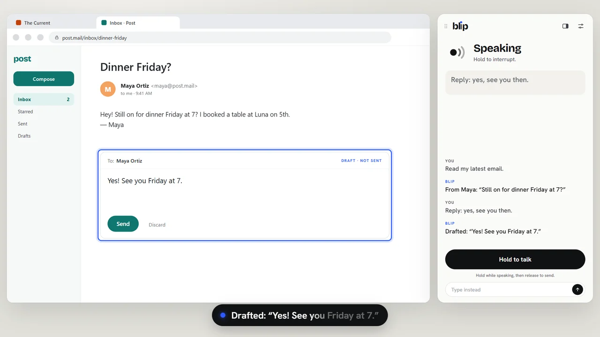
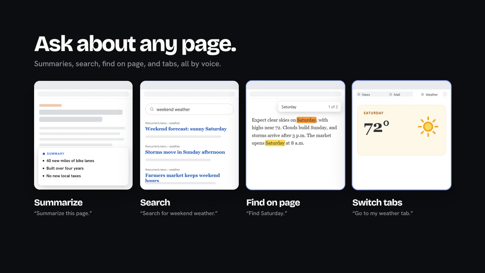
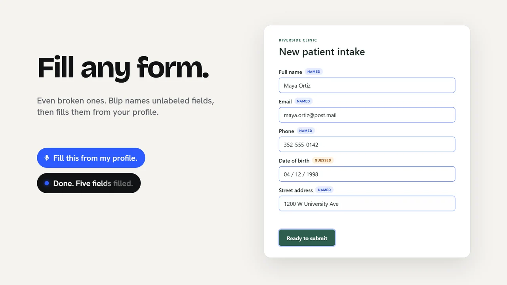
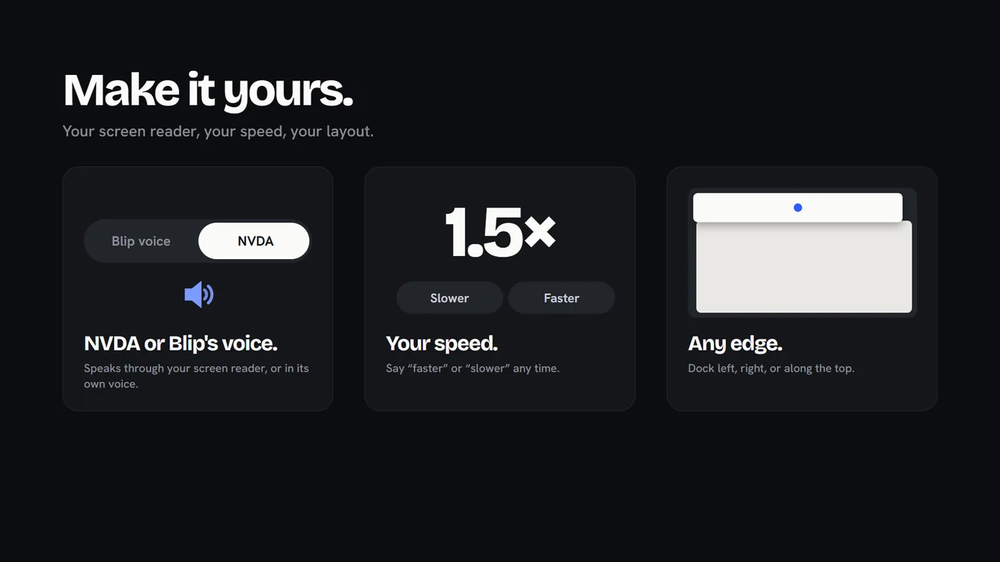

Read and reply
Ask for your latest email and Blip switches to the right tab, finds it and reads it. Dictate a reply, change it in your own words, and hear the final draft before anything is sent.
Built at SwampHacks 2026
Blip is a voice agent for blind and low-vision people. Browse, read, write and fill out forms on any website, just by talking. It works alongside your screen reader, and never acts on anything important without your exact words.
A scripted example. Blip itself runs on your computer.
Why Blip
of the top million home pages have detectable accessibility failures. WebAIM Million, 2026
Screen readers read what a page says. Blip understands what it means, then lets you act on it in plain language.
What it does

Ask for your latest email and Blip switches to the right tab, finds it and reads it. Dictate a reply, change it in your own words, and hear the final draft before anything is sent.

Summaries, site search, find on page, scrolling, links and tabs. Blip works from what's actually on the page, and tells you when it isn't sure.

Blip names unlabeled fields from the page structure, says when it had to guess, fills them from your local profile, and reads every value back before you submit.

Speak through NVDA or Blip's own voice. Say “faster” or “slower” any time, and dock the Blip window to any edge of the screen.
Talk to it
Hold Right Ctrl + Space anywhere, speak, and let go. Or type. Pick a phrase to hear how Blip answers.
Safety
When an action matters, like sending, submitting or opening a new site, Blip tells you exactly what to say. Nothing important happens on a guess, a mishear or a stray “okay”.
How it works
Speech recognition (Moonshine) and Blip's voice (Kokoro) run on your device and work offline after a one-time download.
Demo